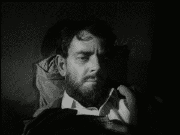

Bob Smith is a man in search of the truth. His favorite quotes are, "We're all fools on this earth, and I can be no different"; "I know it's true, I read it at the LIE-brary"; and "The truth is not misogynistic, it's just the truth".


Here are five additional reviews of some epic, red-pill-only Hollywood movies, which shovel ample portions of mouth-watering truth directly at the viewer.
Unlike today’s SJW Hollywood garbage-fests, each of these top-drawer films reveals practical life lessons and winning strategies for men—especially when it comes to how they might best deal with women.
We get one truly scintillating lesson on that very subject, from Paul Newman’s alpha-male character, Hud Bannon, in the very first film that I review below. (“The only question I ever ask any woman is, ‘What time is your husband coming home’…”)
Hard-living Hud Bannon (played by Paul Newman) works long, arduous days in the hot Texas sun, while banging scores of hot, eager females by night; Melvyn Douglas is stoically perfect as Hud’s disapproving rancher-father, Homer, who holds a malevolent grudge against his oldest boy, based on a long-held grievance.
From a purely subtextual standpoint, this movie subtly describes how beta males greatly admire, and eventually grow to hate, top-rung alpha males. Newman’s brilliantly played Hud overpowers every woman in sight, while not really wanting any of them, and his obsessively jealous brother and father ultimately show their true colors by attempting to destroy Hud’s sense of self-worth, in an uncontrollable, envy-fueled rage—all while secretly wishing they were packing that special je ne sais quoi that Newman’s unapologetic alpha-male character is packing…
If you’re an alpha male, well, you already know how that one goes, and it’s something you simply have to accept, while learning how to deftly sidestep all seethingly jealous, beta-male obstacles.
Sparklingly acted and skillfully directed, you can’t go wrong by watching this unpolished gem of a film; it’s absolutely cram-packed with vital, red-pill truths. Based on the novel by Larry McMurtry.
Another brief glimpse of red-pill reality here, as Hollywood lowers the veil and lets you take a quick peek at how things really go down in the big, bad world…
Grifter Annette Bening pays her landlord with sex; grifter John Cusack scams bartenders and other unsuspecting saps out of their hard-earned cash; and grifter Anjelica Huston rakes in huge profits for the local crime kingpin, Bobo Justus (played superbly by wily character actor Pat Hingle; note the sly, tongue-in-cheek last name of his character here), by dumping large sums of Mob money at horse tracks on nags running at high odds, in order to drop down the eventual payouts to the suckers.
Do human mothers sometimes eat their young? Hmm. That’s a really interesting question. Watch the final scene featuring Cusack and Huston, and you’ll have your answer; this is an intriguing film with slick plot twists, clever dialogue and killer direction, and you can’t go wrong by watching it at least once.
(Ever try passing a 10-dollar bill off as a hundred, while paying a cashier at a store? It actually works—but only if you know how to do it. Yes, this and other fine life lessons, most of them centered around taking exactly what you want from unsuspecting blue-pillers, are readily abundant in this highly informative, must-see, RPO film.)
A cucked husband keeps his wife’s lover chained up, within the hidden sub-basement of an outbuilding on his property, as he prepares to murder him and dispose of the body in a gruesomely novel way; this eyebrow-raising film has basically vanished from the late-night rerun scene on cable TV, probably due to its letter-perfect portrayal of a hot, upwardly mobile young woman who uses men for attention, sex and money and then discards them like yesterday’s outdated fashion statements.
This largely unknown film is a great primer for any open-minded male who is still teetering on the fence about going all-in and pledging his mind, body and spirit to red-pill concepts.

Do yourself a huge favor and take a hard look at this extremely revealing RPO film as soon as possible (that is, if the SJW censors haven’t completely buried it) and you’ll quickly learn some vital life lessons regarding the true nature of females—and how ultimately self-destructive and pointless it is to chase them.
Sally Gray sizzles as the hypergamous hottie, Storm Riordan, who knows exactly what she wants, and very ruthlessly (as well as very sweetly, without giving away a hint of her true motives) proceeds to take it, no matter who it might ultimately destroy.
If you don’t instantly pop wood the moment you first lay eyes on the stunning Faye Dunaway, in this brilliant, Depression Era film’s opening sequence, you are either gay, impotent or dead. Because in my unapologetic opinion, Dunaway’s signature turn as bank-robbing Clyde Barrow’s impossibly gorgeous, pistol-packing sidekick, Bonnie Parker, has provided the manosphere with the most compellingly fuckable female character in the entire history of Hollywood cinema.
And if you think “In the Heat of the Night” deserved to win the 1967 Academy Award for Best Picture, over this undeniably superb RPO film (or the equally brilliant red-pill-only film from 1967, “Cool Hand Luke”, which I may be reviewing at a later date), you are a clueless, leftwing, brainwashed, SJW sock puppet—end of story.

Warren Beatty is flawless as the legendary Clyde Barrow, whose loyal gun moll sticks with him to the bitter end, largely due to her favorite gangster’s alpha-male arrogance and charm.
Gene Hackman is raucously affable as Clyde’s big brother Buck, and even the perennially miscast Gene Wilder gets big laughs in a brief but humorous sequence. Estelle Parsons won an Academy Award for best supporting actress in this film, and it was well-deserved, as she plays the role of Blanche—a whiny, shrieking, it’s-all-about-me, irreversibly damaged harpy—to absolute perfection.
I dropped the ball and failed to include this excellent, red-pill-only film in my first group of movie reviews for ROK, which covered 10 films from the period spanning 1992-2004. Being a man who typically tries to rectify his mistakes—unless it’s a mistake that a woman, or some clueless, blue-pill male thinks I made—I will correct this egregious oversight right now.
I’m not normally a big Michael Mann fan, but this riveting, action-packed, tour-de-force film is about as slick as they come. From the opening bell, this stylishly crafted thriller grabs hold of the viewer and won’t let go, as we enter a fascinating subculture of alpha male criminals that takes whatever it wants—cash, power, and ultimately, any woman it desires—no matter the risks involved.
Robert De Niro (as master thief Neil McCauley) embodies the true physical and mental characteristics of an alpha male who is fully committed to going his own way—most especially if the suckers think it’s the wrong way—and Al Pacino deftly counters with his relentless, burned-out-cop-with-numerous-flaws portrayal of Police Lieutenant Vincent Hanna, as the two of them face off in a final gunslinger showdown that continues to propagate the same old tired, blue-pill crap that Hollywood unerringly propagates: namely, that the good guys always win.
In reality it’s the bad guys who own everything, and Val Kilmer (as Chris Shiherlis) and Jon Voigt (as the ultra-cool Nate) convincingly portray two underworld crew members who firmly realize this fact while harboring not a single shred of doubt about the matter.
Be sure to check out the scene where De Niro’s character, angered at being strong-armed by greedy beta mortgage-banker Roger Van Zant (played by William Fichtner), strides directly up to the floor-to-ceiling windows of the unsuspecting simp’s hillside mansion, and blows him away. (No courts of law needed when you’re playing the game at this level. “Fuck you – pay me. No? Okay…)
This film is a must-see for every man who doesn’t think it’s wrong to act like a real man; non-stop action, brutally graphic violence, and deep-seated, red-pill truths abound.
Modern-day Hollywood’s perpetual bombardment of the human psyche, via its unending series of mind-numbing SJW films, can really get to a guy after a while. One surefire way to effectively fight back is to stop watching Tinsel Town’s current social-engineering bullshit.
Rent some of the RPO films listed above and start getting your mind right; it’s a war, and you’re either in it to win it, or you’re in it to get brainwashed. The choice, as always, is ultimately yours.
Read More: 10 Hollywood Films For Men That Leave Today’s SJW Movies In The Dust